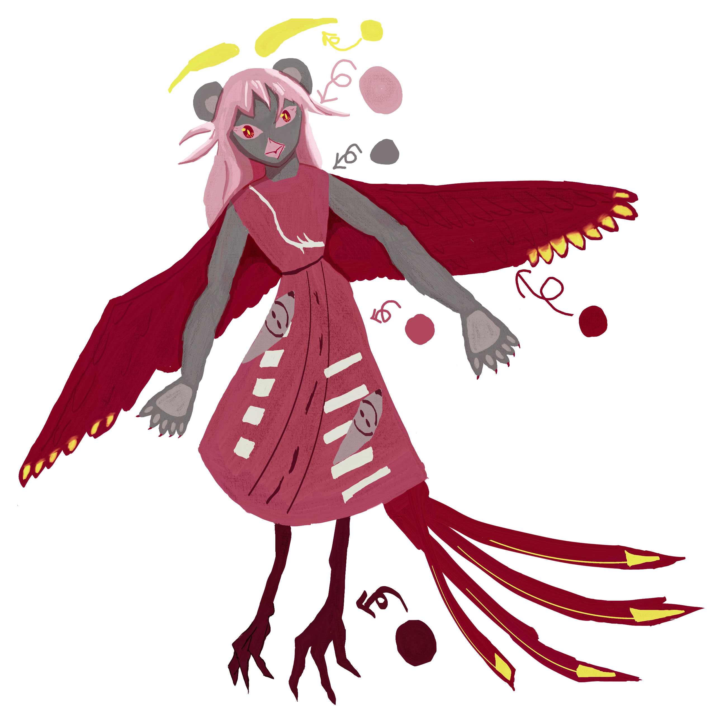

Vosto全域資料庫
Vosto全域資料庫
「戰鬥、競爭。」
溫樂僮的目標從記事起，似乎就是進入一個能合法戰鬥的體系，於是她看中了戰鬥部門。
| 溫樂僮 | |
|---|---|
 |
|
| 姓名 | 溫樂僮 |
| 生日 | ？月？日 |
| 年齡 | ？歲 |
| 性別 | 雙性 ⚠生理性別擇一，無法同時處在之間 |
| 身體資訊 | 309公分 | 155公斤 |
| 愛好 |
魚 蟲子 |
他幾乎是用盡全力考上聯邦戰鬥部門的，不過即使他不這麼做，也依然能進入，溫樂僮十分喜愛戰鬥。
分化結果為熊，但她卻是嚮導，他依然對自我進行近乎殘忍的訓練，因此在入伍考核中，得到了最出色的成績。
由於精神體的緣故遲遲未能找到搭檔，好在遇到了洛雯・桑布瑞爾（Rowan Sambrelle） ↗
這段敘述似乎遺失了。
這段敘述似乎遺失了。
其實是出生在類似鳥類的種族，該族群的特別之處是哨嚮分化後，身體部分會轉變為精神體的一部分，溫樂僮特別的地方是他是個嚮導，卻是熊這種富有攻擊性的強大精神體。
使用哨響世界觀。
精神體：熊。
精神圖景：山地
洛雯・桑布瑞爾是他的搭檔，對方是哨兵，經過一兩年的默契訓練與任務，他們是彼此最忠實的夥伴。

這是他的完全體